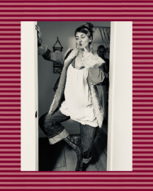

SKETCHBOOK

ABOUT ME
Hi! I'm Scout, a graphic design student interested in visual storytelling, typography, and the relationship between design and everyday life. I enjoy exploring different creative ideas and finding ways to communicate them visually.
My work is inspired by fashion, print, photography, and the small details that make everyday things interesting. I'm especially drawn to editorial design, experimental layouts, and thoughtful use of typography. This website is a space to share my work, interests, and creative process as I continue developing my style as a designer.